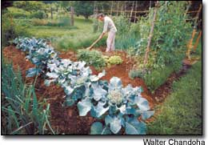
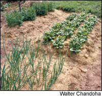
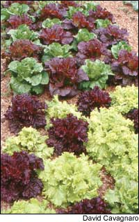
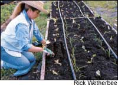
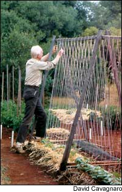
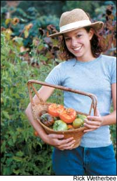
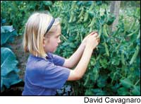
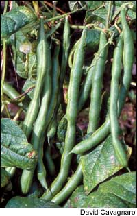

A guide for beginning gardeners
Growing your own food may seem daunting if you’ve never done it. But don’t let your lack of experience keep you from discovering the joys - and the ease - of a kitchen garden.
Everyone who has ever eaten a homegrown tomato knows it can taste better than any other tomato on Earth. And tomatoes are just the beginning - once you start growing for yourself, you can explore the many small specialty companies that offer seeds for plants you can’t find in any store. Many of these plants produce crops that are too fragile to ship in good condition, or too unusual for a farmer to count on selling, so they remain largely unknown to people other than gardeners.
The freshness you enjoy when you pick food right before you eat it does more than guarantee good flavor; it also safeguards nutrients. Once a fruit or vegetable is picked, its nutritional content begins to decline. Good handling slows this down, but even the choicest produce you can buy contains fewer vitamins and minerals than the crops in your back yard.
Great food, the gratification of growing your own and having a good time are the reasons most people continue to garden year after year. The satisfaction of bringing in armloads of gorgeous food; the look of a lush, healthy garden; and being outside and active in the fresh air enlivens many gardeners’ spirits. As for exercise, some people set up their gardens to require a bare minimum of effort; others arrange their plots to give them as much exercise as they would receive from a fitness gym.
Children are drawn to gardens, too. They may lack the necessary perseverance to weed and water a small area, but they never lose interest in watching the plants progress from a pair of seed leaves to a fruit-bearing adult, and they never tire of watching ants, slugs, ladybugs, spiders and all the other creatures bound to happen along. Best of all, vegetables once considered frightening green aliens when they appeared on the dinner table are suddenly greeted by name and gobbled right up. After all, if you are the one who picked it, it’s hard not to relish eating it.
What follows are the key guidelines for a successful new garden:
The easiest way to start new garden beds is to cover an area with cardboard or newspapers topped by compost, soil or mulch. This will smother any grass and perennial weeds if you leave the covering in place for at least several weeks. Then, just cut through the decomposing material, set out your plants and add more compost, grass clippings or other fertilizer.
Another method to clear the land is to rent a tiller (or hire someone to do the tilling). If the area is covered with grass, you probably will need to till it several times to thoroughly break up the sod. (You should rake out as much chopped-up grass as possible and pull any pieces that try to re-grow later.) You also can turn over small areas of sod by hand with a shovel - just don’t try to dig for too long at one time. A few minutes of work each evening will add up quickly and help you avoid sore muscles.
Most new garden soils will benefit from a liberal application of compost. This is ideal, but not essential; you always can add the compost later. When you find good compost at a reasonable cost, spread a one-half- to 1-inch layer over your new beds. Many nurseries will deliver compost to you by the cubic yard, but be cautious about buying “topsoil” - it may be no better than the soil in your yard. If you can’t find a good local source for bulk compost, buy bagged compost, but ask to see a sample from an open bag before making a purchase. Check the compost to make sure it is loose and crumbly, with an earthy odor (some bagged products are of poor quality.)
If you apply compost, or if you use nutrient-rich grass clippings as mulch, additional fertilizers may not be necessary. Soils vary widely in their mineral balance and fertility. In some cases, regular applications of compost and/or grass mulch will be sufficient to produce good crops. But in other locations, your soil may need specialized amendments such as limestone to correct the acidity (pH); or it may need more magnesium, calcium or potassium. You can’t determine what’s needed without a soil test, and adding amendments without testing first can make things worse rather than better.
A soil test is a good idea, but again, it’s not essential. If you don’t get a test and your crops grow well, that’s great. But if your garden doesn’t seem to grow as well as your neighbors’, then a test will help you know how to improve the soil. Testing is easy and inexpensive, thanks to services provided though many cooperative Extension offices. For soil-testing contacts in each state, go to www.MotherEarthNews.com/soil_test.
Organic fertilizers such as compost, grass clippings, and soybean or cottonseed meal nurture earthworms and other beneficial soil organisms, and at the same time, they provide ample nutrients for your crops. (You could spend years learning about the fascinating web of creatures that help to create fertile soil; Mother’s most recent article on this topic is “Building Fertile Soil,” June/July 2003.) Regular applications of organic matter will increase soil life and help the soil retain moisture. Using the organic approach also will help protect your garden from pests and diseases, and it will allow you to avoid harsh chemical fertilizers that cause water pollution and damage soil life.
By the way, most people aren’t aware that fresh grass clippings are a rich, free source of nitrogen and other plant nutrients. Just use a 1- to 2-inch layer as mulch, or a one-half-inch layer mixed into the soil each spring (about six 5-gallon bucketfuls per 100 square feet) to provide most crops with plenty of nutrients. If you can obtain pesticide-free clippings from your neighborhood, you’ll never need to spend money on fertilizers.
An organic mulch of grass clippings, leaves, hay or straw does triple duty in the garden. In addition to feeding plants as it decomposes, the mulch also prevents weeds and reduces watering chores.
Concentrate on making your first garden as easy to care for as possible. A couple of simple tricks will help you achieve this:
Plant in dedicated beds, not rows. If you till your garden, rake loose soil from the pathways to form 4-foot-wide growing beds of whatever length suits you. (If you have a dry climate or sandy soil, you may want to make slightly sunken beds, rather than raised beds, to help conserve soil moisture.) If you’ve decided to create the garden by spreading mulch in the first season, cover the area as explained earlier and simply mark off 4-foot-wide beds, and then make the paths between them about 3 feet wide, which is a comfortable width for walking and working.
Check seed packets or garden books to learn how many rows to plant in each dedicated bed. With lettuce, for example, you would make four rows across each bed. Each of the outside rows would be about 6 inches from the sides of the bed, and the interior rows would be about 1 foot from each adjacent row. Using this method, however, you only would plant two rows of larger plants such as potatoes or peppers.
Planting in permanent beds gives you the advantage of applying fertilizer only on the beds, not the paths, which saves money and discourages lush weed growth in the pathways. The close spacing between plants in beds also helps with weeding - as the plants gain in size, the soil around them becomes too shady for good weed growth. Another big advantage of permanent beds is that you can avoid walking on the soil, so it stays looser to promote better growth.
Mulching is the second great labor-saver. When you keep the soil mulched, most weed seeds can’t sprout. Mulch the pathways between your beds, and then mulch the spaces between your rows as soon as seedlings are a few inches tall or when purchased plants are transplanted into the beds.
When you think of your future garden, you may imagine a half acre of crops, all nicely laid out in beds, with trellises and tipis interspersed for visual interest, and enough flowers to keep a small florist busy. That’s certainly a wonderful goal - but not for the first year. You will have to start small!
If you begin with a small plot, you are less likely to become overwhelmed. The most common reason for abandoning a garden is too much ambition. In the spring, when the weather’s nice and you’re happy to work outside, it’s easy to open too much area and plant too many crops. Resist this temptation - make your garden smaller than you can easily care for so you never have trouble keeping up mulching, watering and harvesting. Add to it over time, increasing it just enough so that you can take care of it without begrudging the time or energy you’ve spent.one in stages, your garden will grow to suit your needs without becoming too much for you to handle.
Good crops for beginning gardeners include lettuce, peas, carrots, radishes and onions in the spring; tomatoes, peppers, eggplant, corn, cucumbers and zucchini as the growing season progresses; beets and kale for fall harvest. Crop selection can make a difference to both your enjoyment and your success as a gardener. Some crops, such as tomatoes, can be difficult to keep disease-free - unless you choose a variety that’s been bred to resist the diseases prevalent in your area. Begin by buying seed from companies based in your region (see “Finding Great Garden Seeds,” April/May 2005). Carefully read catalogs and seed packets to find plants suited to your growing season, or that offer the promise of good flavor and that contain high nutritional content. Reading catalogs is great fun, too, and you’ll learn a good deal.
When gardeners talk about diversity, they are referring to growing a variety of crops adjacent to each other. This kind of garden plan gives you several advantages. It discourages flying pests because, rather than seeing a big area of their favorite host, they see a patchwork of plants scattered here and there throughout the garden.
Soil-dwelling pests and diseases tend to play favorites, too. If they have to travel only a few inches from the roots of one plant to the next, they have no trouble spreading through your garden. But if they have to travel through a labyrinth of roots from a variety of plants, they may not make it to the next host plant. Their populations can’t build to high numbers if they occupy only a few plants. This is the secret behind crop rotation, too - by changing the location of your crops every year, you move away from pests or diseases that overwinter in the soil, waiting for next year’s plants.
Diversity and crop rotation also help to manage the soil because different crops require different ratios of nutrients. If you always grow squash in the same place, for example, this nitrogen-hungry crop may deplete the soil’s natural supply.
You can add more area or design more complicated features to your garden once you’ve begun to feel confident about your gardening skills. Until then, stick with these principles to create an easy-care garden filled with a bounty of healthy crops.
Miranda Smith is a veteran organic garden writer and editor who lives in St. Petersburg, Fla. She has authored more than a dozen gardening books, including Advanced Home Gardening.
The many shelves of gardening books you’ll find at your local library and bookstores can yield some treasures, particularly if you’re looking for information about your region. The following books, however, will provide a good introduction to organic gardening:
The Garden Primer, by Barbara Damrosch
Straight Ahead Organic: A Step by Step Guide to Growing Great Vegetables in a Less-than-Perfect World, by Shepherd Ogden
The New Seed Starter’s Handbook, by Nancy Bubel Weedless Gardening, by Lee Reich
McGee & Stuckey’s Bountiful Container: Create Container Gardens of Vegetables, Herbs, Fruits, and Edible Flowers,by Rose Marie Nichols McGee and Maggie Stuckey
Regional references
The Southern Garden Advisor, by Barbara Pleasant
North Country Gardening, by Neil Moran
Growing Vegetables in the Great Plains, by Joseph R. Thomasson
Growing Vegetables West of the Cascades: The Complete Guide to Natural Gardening, by Steve Solomon
Your best gardening resources are likely to live right down the street from you. People love to talk about their gardens, so if you walk by a great vegetable garden everyday but never have met the owner, be bold. Knock on the door and introduce yourself. Chances are you’ll soon be learning the best crops and varieties for your area, when to expect the last and first frosts of the season, and where to shop for seeds and supplies.
If you can’t find a gardening neighbor, look for help at a nursery or garden center. The cooperative Extension service associated with your land grant university is another source of information. Call or visit your local Extension’s Web site to learn about informational gardening programs and to find useful written material about gardening in your area.
Make your first questions specific, and be sure to explain initially that you want to garden organically. You’ll probably find good help, and you may make a gardening friend for yourself, too.
Tap into hundreds of how-to articles about gardening in Mother’s online Archive at www.MotherEarthNews.com.
The National Sustainable Agriculture Information Service (also known as ATTRA) provides information for gardeners and farmers nationwide. This service provides numerous publications and information packets, all without charge. The Web site, www.attra.org, serves as an information clearinghouse, too.
You’ll find many additional Web sites with links to other gardening sites, as well. Begin your search by trying the following Web sites:
www.gardening.about.com
www.heirloomtomatoes.bizland.com/links/organicgardening.html
To truly start small, grow your first vegetables in containers. Fill a 5-gallon bucket or a large (at least 14-inch diameter) pot with a rich, compost-based potting soil. Plant crops such as lettuce and cherry tomatoes, both of which thrive in containers as long as you have a sunny spot to place them. Many garden plants can be grown this way; for additional ideas or to place an order for containers, check out www.containerseeds.com. Keep your pots well-watered, especially during hot, dry weather, and fertilize with liquid fertilizers such as fish emulsion, mixed as directed on the bottle, every week after the first month of planting.
|
 Save time and labor by mulching with a 1- to 2-inch layer of grass clippings ? a rich, free source of nitrogen and other plant nutrients. |
 Plant lettuce close and harvest it often. |
 Onions, broccoli and lettuce make good neighbors; they?ll appreciate drip irrigation installed at planting time. |
|
 A string trellis gives climbing crops a place to grow and adds visual interest to your garden |
 Tasting the first fruits of your garden labor will make a season?s work seem well worthwhile. |
 Supported by a chicken-wire trellis, these ?Cascadia? snap peas are a snap to pick. |
|
 |
 |
|